La Basilicata in dettaglio
Questa pagina è incompleta. Alla raccolta mancano 6 dei 17 fascicoli accertati della regione — Matera - Potenza, annate 81/82–83/84, 85/86, 94/95 e 96/97 — e i dati che dipendono dall'esame diretto dell'esemplare sono segnati in sospeso. Le copertine non reperite sono sostituite da un segnaposto; nella griglia dei comuni le annate scoperte portano una croce e non una casella vuota, perché vuoto significherebbe «non cartografato», che non è ciò che sappiamo. Per la stessa ragione la pagina non è annunciata altrove nel sito, e vi si arriva soltanto per indirizzo.
Questa pagina si occupa di definire con estrema precisione l'organizzazione interna dei fascicoli dell'intera regione Basilicata.
Il censimento registra un totale di 17 fascicoli e 3 comuni cartografati.
Tabella dei fascicoli
I fascicoli della Basilicata appartenevano in principio alla serie iniziale: il primo fascicolo, edito a maggio del 1981, era infatti intitolato TuttoCittà 81. Tuttavia nell'annata 1985/86 la serie lucana fa il salto dalla serie iniziale a quella tardiva: il fascicolo edito nel 1985 riporta infatti in copertina il titolo TuttoCittà 86 con copertina rossa, saltando quindi il titolo TuttoCittà 85. La serie lucana è anche una delle sole due — l'altra è quella campana — ad avere un fascicolo con layout TuttoCittà '90 classico dal titolo TuttoCittà 98.
Alla fine degli anni '90 la pubblicazione dei fascicoli cessò per entrambe le province.
La seguente tabella censisce i dati fondamentali dei fascicoli della Basilicata, mostrandone le copertine e indicandone il formato, il layout così come definito in questa pagina, e il numero totale di pagine, anno per anno.
| Annata | Colore tavole | Copertine |
|---|---|---|
81/82 | Matera - Potenza 81
| |
82/83 | Matera - Potenza 82
| |
83/84 | Matera - Potenza 83
| |
84/85 | 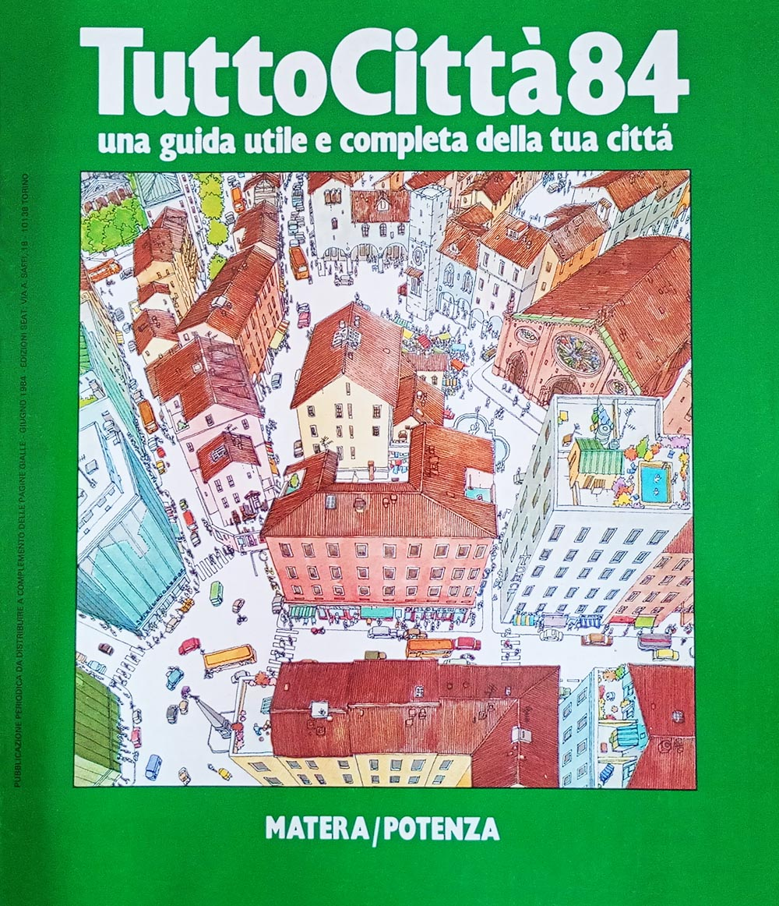 Matera - Potenza 84
| |
85/86 | Matera - Potenza 86
| |
86/87 | 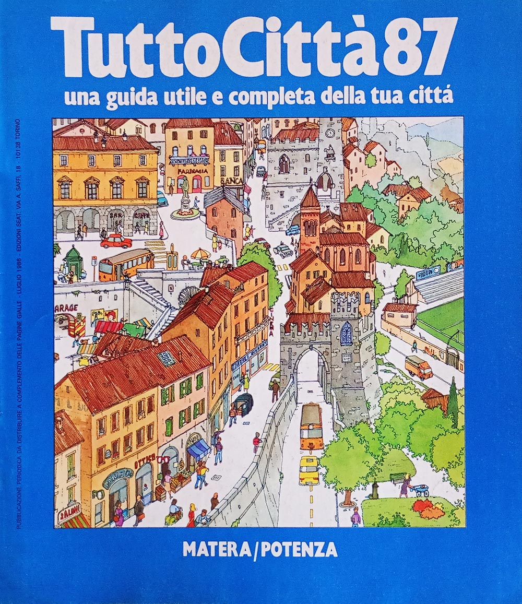 Matera - Potenza 87
| |
87/88 | 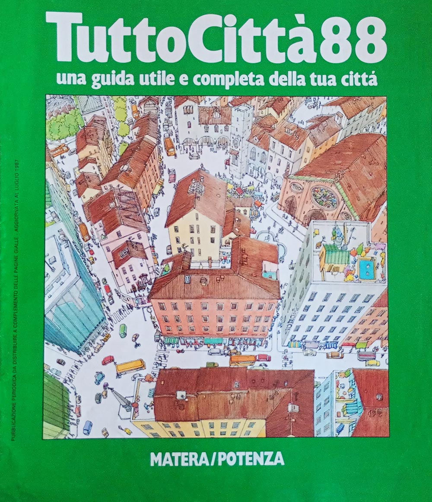 Matera - Potenza 88
| |
88/89 | 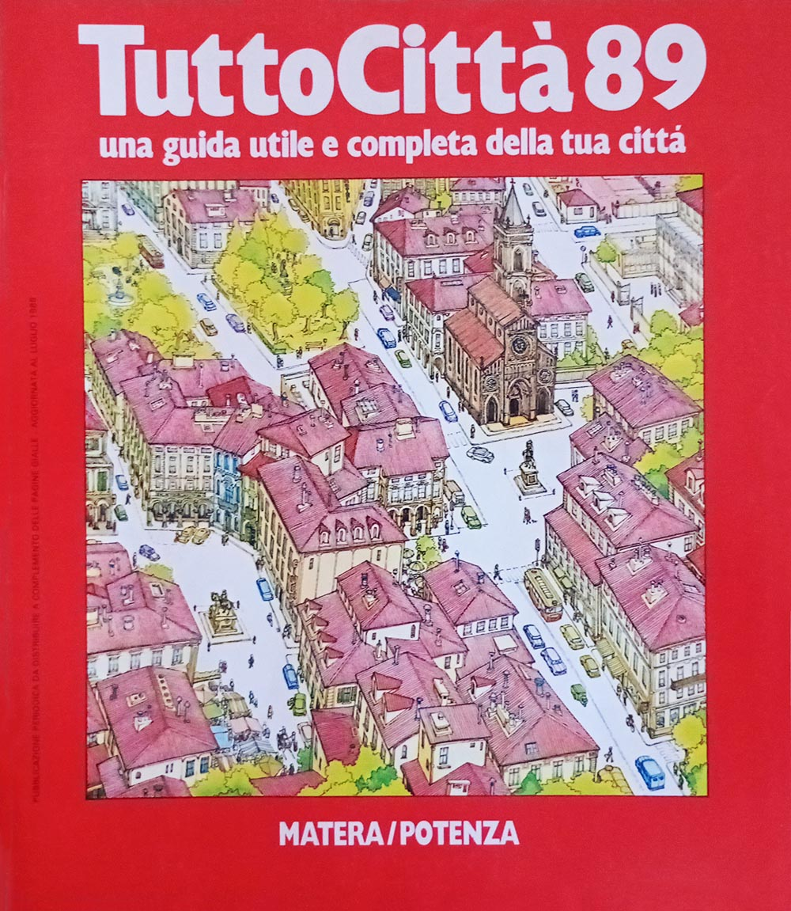 Matera - Potenza 89
| |
89/90 | 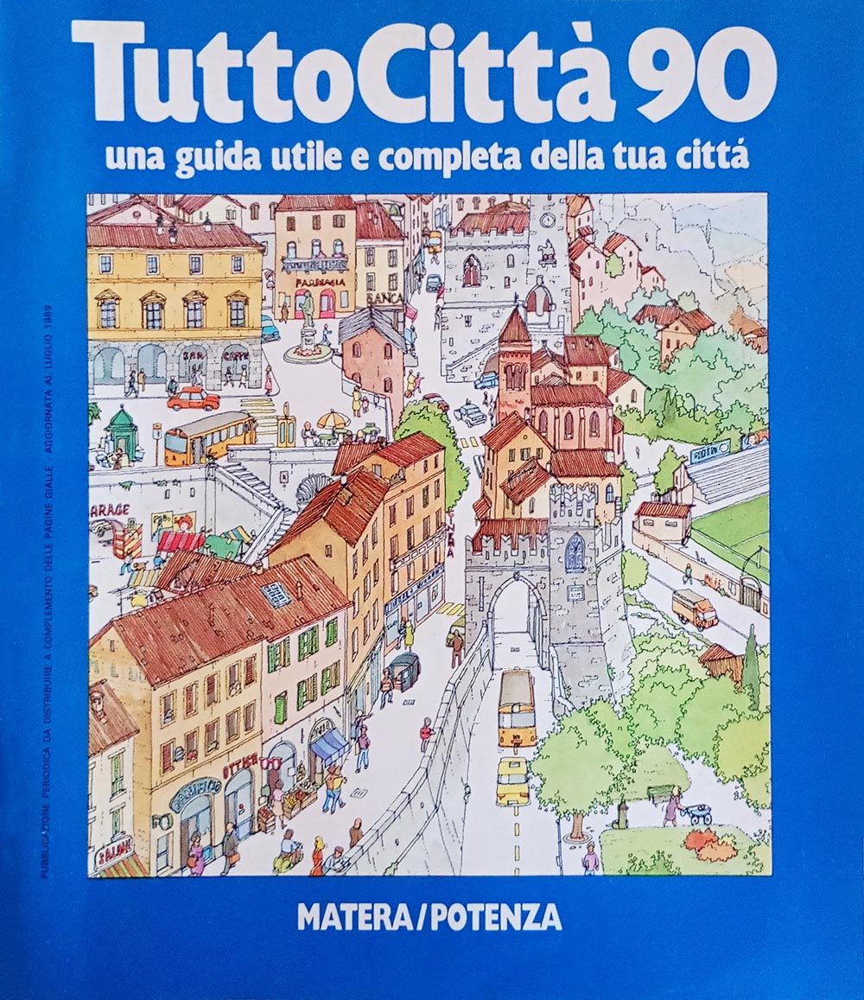 Matera - Potenza 90
| |
90/91 | 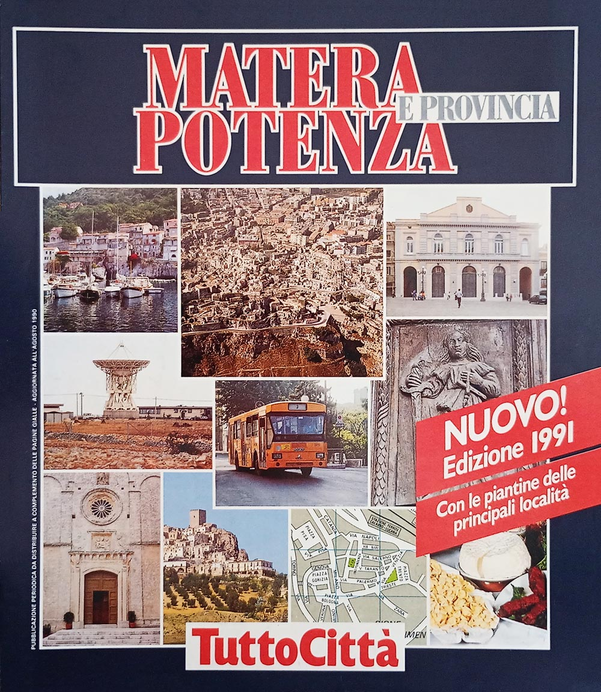 Matera - Potenza 91
| |
91/92 | 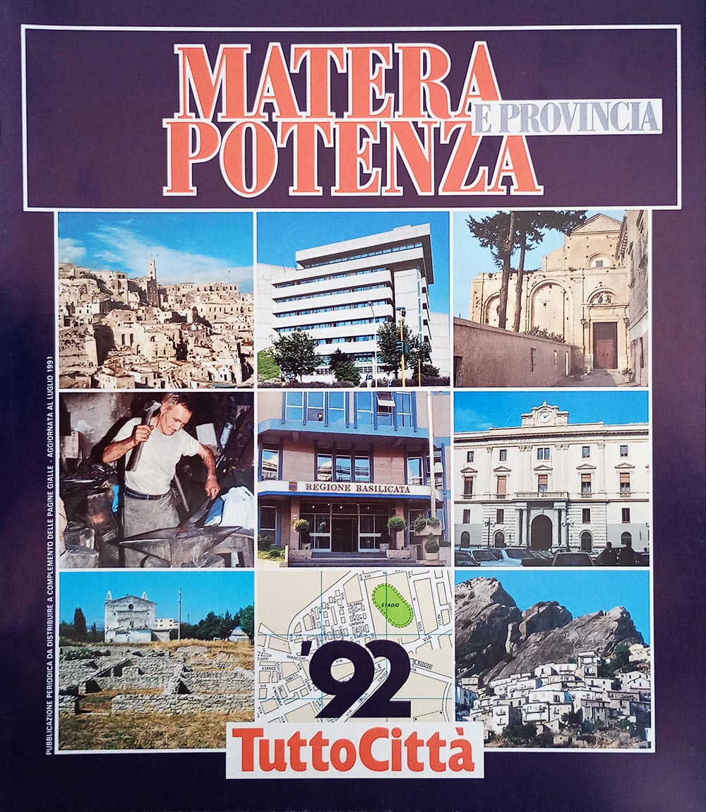 Matera - Potenza 92
| |
92/93 | 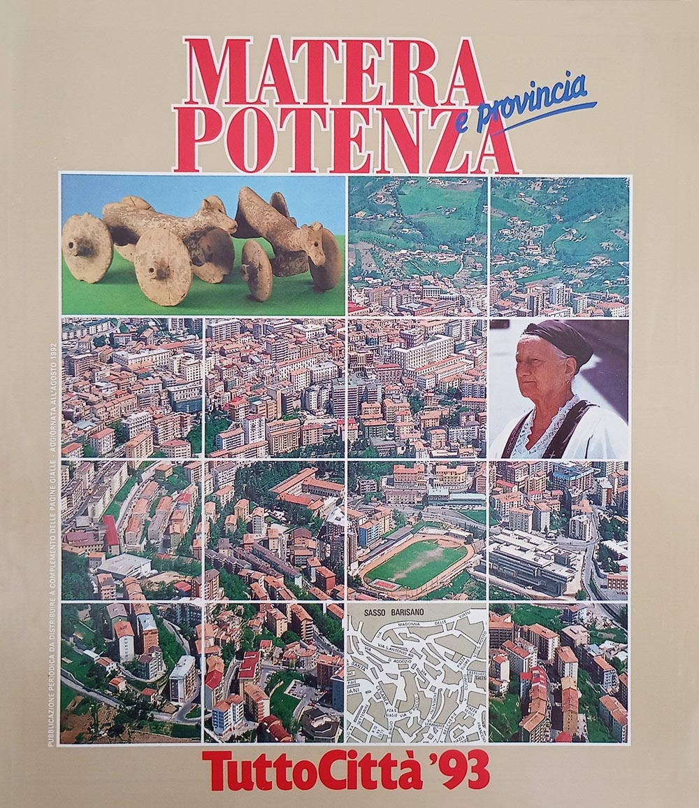 Matera - Potenza 93
| |
93/94 | 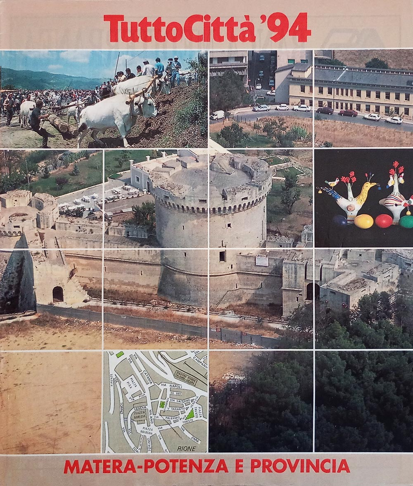 Matera - Potenza 94
| |
94/95 | Matera - Potenza 95
| |
95/96 | 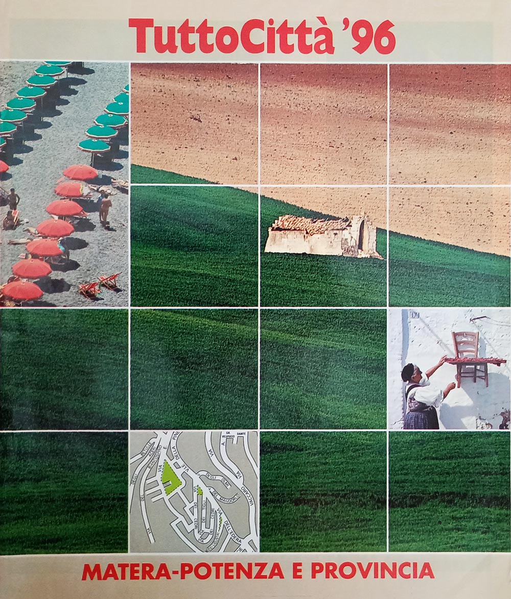 Matera - Potenza 96
| |
96/97 | Matera - Potenza 97
| |
97/98 | 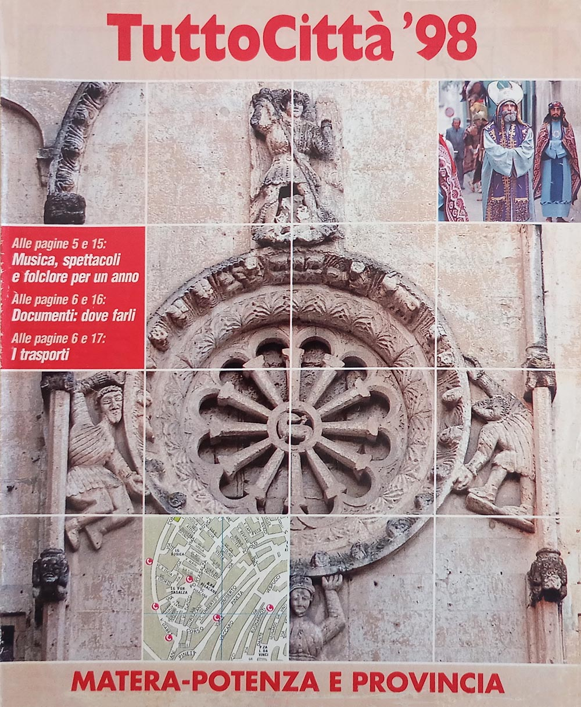 Matera - Potenza 98
|
{kind=link}
{kind=link}
{kind=link}
{kind=link}
{kind=link}
{kind=link}
{kind=link}
{kind=link}
{kind=link}
{kind=link}
{kind=link}
{kind=link}
Tre layout in diciassette anni
La seguente tabella censisce i vari layout utilizzati per i fascicoli della regione, secondo il sistema definito durante il censimento osservando l'impaginazione; le loro caratteristiche sono descritte in questa pagina. Come descritto anche lì, i cambi di layout non rispettano i cambi delle serie di copertina descritte nell'apposita pagina di questo sito.
| Layout | Annate | Anni di copertina |
|---|---|---|
| TuttoCittà '80 classico | 83/84 – 89/90 | 83848687888990 |
| TuttoCittà '90 classico iniziale | 90/91 – 91/92 | 9192 |
| TuttoCittà '90 classico | 92/93 – 97/98 | 939495969798 |
Non compaiono le annate 81/82 e 82/83: il fascicolo non è in raccolta e il layout non è stato accertato.
Le città cartografate
La seguente tabella censisce tutti i comuni che sono stati cartografati nel corso del tempo e per quante annate. Ad ogni riga corrisponde un comune, in ordine alfabetico e non per provincia: lo scopo è infatti identificare a colpo d'occhio quali comuni entrano ed escono dalla cartografia nel corso degli anni. I due capoluoghi — MATERA, POTENZA — sono in maiuscolo, ma restano al loro posto nell'alfabeto. La croce segna le annate in cui il fascicolo non è in raccolta: non sappiamo se il comune fosse cartografato.
Le caselle azzurre indicano invece che il comune era cartografato, ma non compariva il relativo elenco delle vie, un fenomeno questo relativamente comune soprattutto nei fascicoli degli anni '80. È il caso di Policoro, che entra nella cartografia due annate prima di entrare nell'indice.
Espandi la griglia delle città — 3 città su 17 annate
| Città | 81/82 | 82/83 | 83/84 | 84/85 | 85/86 | 86/87 | 87/88 | 88/89 | 89/90 | 90/91 | 91/92 | 92/93 | 93/94 | 94/95 | 95/96 | 96/97 | 97/98 |
|---|---|---|---|---|---|---|---|---|---|---|---|---|---|---|---|---|---|
| MATERA | × | × | × | × | × | × | |||||||||||
| Policoro | × | × | × | × | × | × | |||||||||||
| POTENZA | × | × | × | × | × | × |
Le città cartografate almeno una volta sono 3. Sulle 11 annate di cui la raccolta ha tutti i fascicoli, il minimo è nelle annate 84/85, 86/87 e 87/88, con 2 città; il massimo nelle annate 88/89–93/94, 95/96 e 97/98, con 3.
L'indice degli articoli, 1991-1998
Dall'annata 1990/91 ciascuna provincia ha una rubrica di articoli su storia, ambiente ed economia locale — in molti fascicoli sottotitolata «Vivere la città» — che perdura fino all'annata 1997/98. Sono 59 titoli in otto annate, mai indicizzati altrove: un piccolo corpus di giornalismo locale distribuito gratuitamente in centinaia di migliaia di copie e poi scomparso senza lasciare traccia in alcuna risorsa online.
I titoli sono trascritti come compaiono nel fascicolo. Il testo degli articoli non è riprodotto: i diritti appartengono all'editore.
Annata 90/91
- Matera
- Anni 90. I Sassi, l'architetto, il laboratorio • Identikit di una provincia • «Città di aspetto curiosissimo…» • Chiese rupestri e madonne contadine • Date storiche • Laser e satelliti per la crosta terrestre • La ricetta della nonna
- Potenza
- Anni 90. Il parco tecnologico • Identikit di una provincia • Se le antiche pietre raccontano la storia • Aglianico del Vulture il vino ellenico • I castelli dell'Imperatore poeta
Annata 91/92
- Matera
- Verso il '92. Fiorisce l'industria nella val Basento • Lo sportello dei cittadini • Nomi e cognomi. Rubolino a Policoro, Fornabaio e Stigliano • Ceramiche e fischietti tradizioni in rilancio • C'erano una volta i campanacci • Le radici di Policoro nelle antiche Siris ed Heraclea • I vini elogiati da Orazio
- Potenza
- Verso il '92. Potenza, l'industria nel regno dei pini • Harix, un modello di trasparenza • I dieci anni di un giovane ateneo laboratorio dell'antica cultura lucana • Nomi e cognomi. I più diffusi: Telesca e Santarsiero • Il mistero di Monna Lisa è sepolto a Lagonegro • Tra boschi e valloni, i gioielli del Medioevo • Vini e gastronomia. La Regione in cucina • Le tappe dell'Aglianico
Annata 92/93
- Matera
- Il futuro possibile. Matera, città d'arte fra i tesori della natura • Scherzi e "nonsense" nei canti del popolo • Itinerari per il week-end. Grotte, castelli e abbazie verso la valle del Basento • Vini e gastronomia. I maccheroni di fuoco e le lagane per i poveri
- Potenza
- Il futuro possibile. Potenza alla ricerca delle civiltà sepolte • Pontefici e imperatori ai concili di Melfi • Polka e lambada al ritmo del "cupa cupa" • Itinerari per il week-end. Capolavori d'architettura alle pendici del Vulture • Vini e gastronomia. Orecchiette e dolci con i fichi
Annata 93/94
- Matera
- Italia domani. Storia, cultura e turismo per rilanciare Matera • Incontriamoci in piazza Ridola la "bomboniera" dei Sassi • Dialetto e nomi. Irsina, il paese nato dal bosco
- Potenza
- Italia domani. Il sorriso di Potenza, colta e solidale • Val d'Agri, Texas • Le battaglie civili di Chiaromonte • La ninna-nanna della zia vecchiarella
Annata 94/95
- Matera
- in sospeso il fascicolo Matera - Potenza 95 non è in raccolta
- Potenza
- in sospeso il fascicolo Matera - Potenza 95 non è in raccolta
Annata 95/96
- Matera
- Progetti giovani. Emergenza occupazione • Da Montescaglioso a Tursi sulle tracce di arabi e greci • Paideja, l'arpa è pop
- Potenza
- Progetti giovani. Ambiente, lavoro e cultura: le sfide di Potenza • Da Rionero in Vulture a Rapolla, tra torri e abbazie • Mango, canzoni solari con il cuore a Lagonegro • Giustino Fortunato, profeta del "nuovo" Mezzogiorno • La provincia verde. Lupi e falchi pellegrini nel parco del Pollino • Il pino con l'armatura
Annata 96/97
- Matera
- in sospeso il fascicolo Matera - Potenza 97 non è in raccolta
- Potenza
- in sospeso il fascicolo Matera - Potenza 97 non è in raccolta
Annata 97/98
- Matera
- Matera, il "circo" dei bambini • Lenticchie e lampasciuoli, la cucina dei sapori antichi • Tra i libri
- Potenza
- Potenza, per i ragazzi un porto nel bosco • Laura Battista, maestra e poetessa nell'800 • E la lumaca diventò "pecorella" • I pioppi sul lago di Pignola
I dati
basilicata_fascicoli.csv— un fascicolo per riga: foliazione, layout, formato, copertina, presenza in raccoltabasilicata_cartografia.csv— un comune per riga e per annata, con la provincia e se compariva nell'elenco delle viebasilicata_articoli.csv— un titolo per riga: l'indice delle rubriche provinciali
Chi possiede i fascicoli mancanti e vuole vedere questa pagina completata troverà nelle questioni aperte come contribuire.